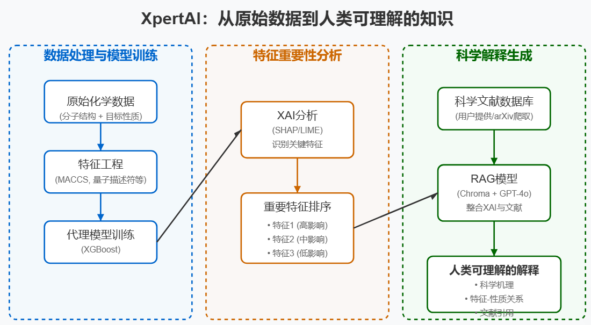

2025年初，Communications Chemistry期刊发表的一篇研究论文提出了一个名为XpertAI的创新框架。这一框架巧妙地结合了可解释人工智能(XAI)和大型语言模型(LLM)，解决了化学领域中机器学习模型不透明的问题，为化学家提供了能够理解的分子结构-性质关系解释。本文将探讨这项研究的背景、核心思路、具体实现以及其潜在影响。
研究背景：机器学习面临的"黑盒"困境
在当今化学研究领域，机器学习已成为预测分子性质的强大工具。然而，这些模型虽然在预测准确性上表现出色，却往往被视为"黑盒"——它们无法解释为什么做出特定预测，也无法提供预测背后的科学原理。这导致了两个关键问题：
- 实验化学家的信任危机：当模型不能解释其预测背后的理由时，专业人士自然会对其产生怀疑。
- 知识鸿沟：机器学习模型学习到的关系可能包含尚未被科学界发现的新规律，但这些潜在发现被隐藏在不透明的算法中。
现有的解决方案也存在明显局限：可解释人工智能(XAI)工具虽然能够揭示模型关注了哪些特征，却无法提供科学理论上的解释；而大型语言模型(LLM)则可能产生一般性解释，但这些解释通常不针对特定数据，甚至可能出现"幻觉"。
研究者Wellawatte和Schwaller意识到，理想的解决方案应该能够结合XAI的数据针对性和LLM的语言能力，同时辅以科学文献的支持，实现真正的"机器辅助科学发现"。
XpertAI的设计思路：数据、模型与文献的协同进化
在这一洞察的引导下，作者设计了XpertAI框架，将机器学习的可解释性与科学文献知识有机结合，形成一个从数据到知识的完整闭环：

核心思路
XpertAI的设计遵循科学家从观察到假设再到验证的传统科学方法：
- 数据驱动的观察：首先，使用机器学习捕捉数据中的模式和关系
- 特征重要性分析：通过XAI方法识别对预测最重要的分子特征
- 科学解释生成：结合文献知识，为识别出的重要特征提供科学理论支持
- 人类可理解的呈现：以自然语言形式提供完整解释，包括文献引用
这一过程模拟了科学家面对新数据时的思考流程，但通过AI实现了自动化和规模化。
技术实现
为实现上述思路，作者精心设计了一个多模块系统：
- 代理模型训练
研究团队选择了基于树的XGBoost算法作为代理模型，这一选择基于三个考量：
- 训练和推理效率高，适合快速迭代
- 相比深度神经网络具有更高的内在可解释性
- 与主流XAI方法（如SHAP和LIME）兼容性好
- 可解释性分析
系统支持两种XAI方法：
- SHAP分析：计算每个特征对模型输出的贡献，获取全局重要特征
- LIME分析：通过局部线性近似解释模型行为，并计算Z分数提取关键特征
这一步的目标是确定哪些分子特征对目标性质有显著影响，为下一步的科学解释奠定基础。
- 基于检索的生成模型(RAG)
这是XpertAI最创新的部分，包含两个核心组件：
- 检索系统：使用LangChain和Chroma向量数据库从科学文献中检索相关信息
- 生成系统：利用GPT-4o通过特定提示模板，整合XAI结果和文献知识生成连贯解释
作者采用了最大边际相关性搜索(MMR)策略，平衡相关性和多样性，避免信息冗余。同时，使用链式思考提示方法指导GPT-4o生成具有科学严谨性的解释。
实践验证：从多个化学领域案例看XpertAI的有效性
研究团队精心设计了五个案例研究，涵盖了化学领域的多个重要方向，从材料科学到药物开发，下表总结了这些案例的关键信息：
值得注意的是，案例5故意使用了一个小型数据集，目的是展示当底层机器学习模型训练不充分时，XpertAI的局限性。这体现了研究者对自身工作局限性的诚实认识，同时也提供了一个重要的对比参照。
在每个案例中，XpertAI不仅识别出了重要特征，还提供了这些特征如何影响目标性质的科学解释，并辅以文献支持。例如，在小分子毒性预测中，XpertAI解释了为什么杂原子-氧键合和叔胺会增加毒性：前者会增加分子反应性，后者可能与生物系统中的亲电位点相互作用。
多维度评估：XpertAI的优势与局限
研究团队通过多种评估方法验证了XpertAI的性能：
- 人类专家评估
5位化学领域研究生对XpertAI、纯ChatGPT和纯XAI方法生成的解释进行评分，结果显示XpertAI在准确性、可解释性、可访问性、研究有用性和针对性五个维度上都获得了最高评分。特别是，专家们认为：
- XpertAI解释直接讨论了数据中识别的特定特征
- 提供了具体例子说明特征如何影响目标性质
- 通过文献引用建立了解释的可信度
- 假设精度评估
研究者还评估了系统生成假设的精度，发现XpertAI在确定特征与性质关联方向（正相关、负相关或不明确）方面表现出色。关键的是，当文献中找不到明确证据时，XpertAI会明确表明这一点，避免生成无根据的结论。
- 引用准确性分析
XpertAI生成的文献引用总体上准确且相关，失败案例主要源于文献中缺少特征标签的准确描述。这一分析指出了改进方向：需要更加注重特征描述的选择，确保与文献术语一致。
- 开源可行性探索
为降低对商业LLM的依赖，研究者还测试了多种开源模型在XpertAI框架中的表现。结果表明Mixtral(8×7b)、Llama3.1:8b和Starling-lm:7b等模型表现接近GPT-4，特别是在生成科学解释方面，但在准确引用能力上仍有提升空间。
未来展望：XpertAI的进化路径
作者清醒地认识到XpertAI当前的局限性，提出了几个关键改进方向：
- 代理模型优化
- 集成自动超参数优化
- 支持更多机器学习模型类型
- 允许用户提供自定义预训练模型
- 特征工程改进
- 优化特征描述，使其与科学文献术语更一致
- 改进特征选择机制，避免捕捉虚假相关性
- RAG系统增强
- 整合自动文献爬取和筛选功能
- 改进文献检索的精确性和召回率平衡
- 进一步优化提示工程，提高解释质量
- 开源化推进
- 整合性能更好的开源LLM
- 降低使用门槛和计算资源需求
值得一提的是，XpertAI已经开源，研究者可以通过GitHub访问其代码，或通过Streamlit应用轻松使用（需OpenAI API密钥）。
结语：迈向可解释化学的新时代
XpertAI代表了人工智能辅助科学发现的一个重要里程碑。它不仅解决了机器学习在化学领域应用中的"黑盒"问题，更为科学家提供了一个从数据中自动提取知识的工具。通过结合数据驱动的机器学习与基于文献的科学解释，XpertAI搭建了一座连接计算化学与实验化学的桥梁，有望加速化学领域的创新和发现。
正如研究者所指出的，XpertAI模拟了科学家从观察到假设再到验证的科学方法，但通过AI实现了自动化和规模化。这一框架不仅对化学结构-性质关系分析有重要价值，其思路和方法也可能被应用到物理、材料、生物等多个学科，开创跨学科科学发现的新范式。
随着人工智能技术的不断进步，我们有理由相信，像XpertAI这样的系统将在科学研究中扮演越来越重要的角色，帮助科学家更有效地从海量数据中提取知识，加速科学发现的步伐。